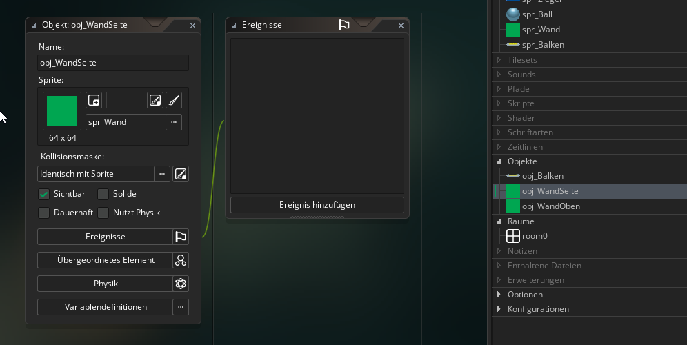
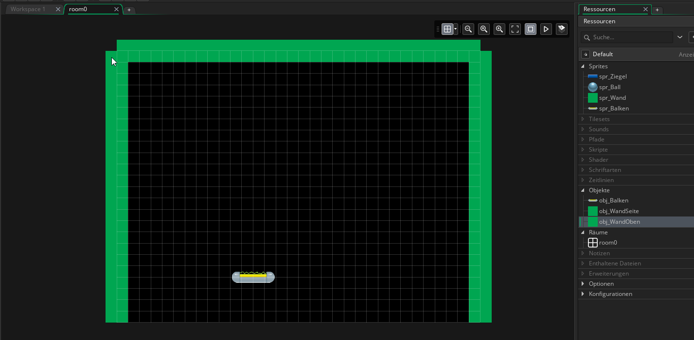

5. Die Seitenwände¶
Ziele
In diesem Kapitel wirst die Seitenwände erstellen, die verhindern, dass der Ball aus dem Spielfeld fliegt.
Erstelle zwei neue Objekte mit den Namen "obj_WandSeite" und "obj_WandOben" und gib beiden Objekten das Sprite "spr_Wand"

Gehe wieder in room0 und füge am oberen Rand eine Instanz von obj_WandOben ein und ziehe sie mit der Maus so groß, dass sie über die ganze Breite des Raums geht.
Füge dann links und rechts je eine Instanz von obj_WandSeite ein und ziehe sie so groß, dass sie die ganze Höhe des Raums abdecken.
Der Raum sollte nun in etwa so aussehen:
